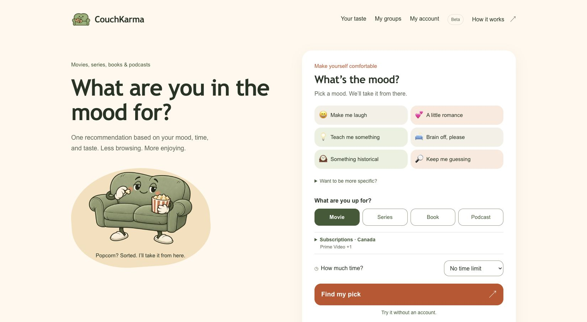
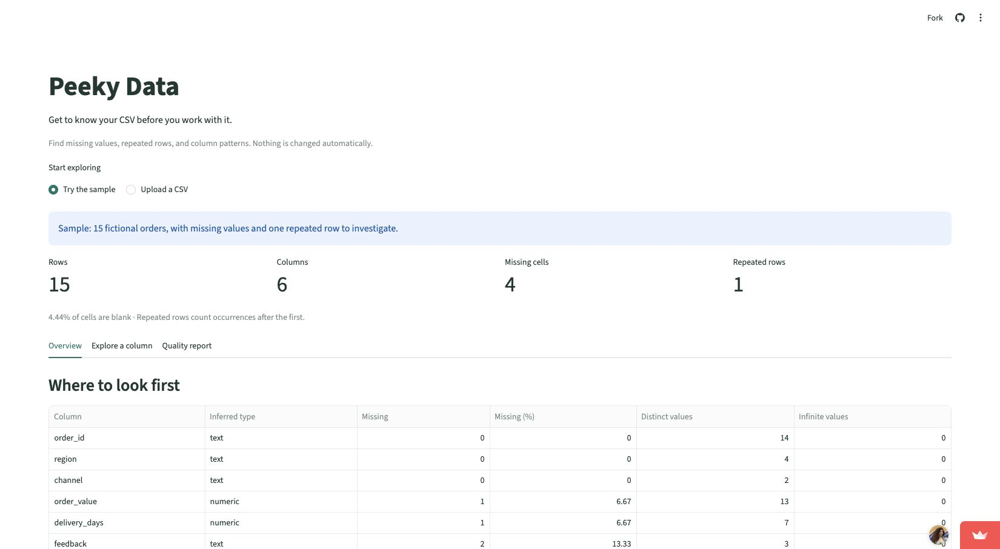

Worker incentives
I built a reinforcement-learning system that adjusts worker incentives as staffing needs change.
I’m a Senior Data Scientist at WorkWhile, working on incentives, forecasting, and experimentation. Previously, I built authentication-risk and anomaly-detection models for cybersecurity products.
View my résumé →WorkWhile
I built a reinforcement-learning system that adjusts worker incentives as staffing needs change.
I built forecasts and an optimizer to help decide how much backup staffing to plan for.
I built an LLM-assisted tool that combines customer conversations and marketplace data for account teams to review.
SecureAuth · Acceptto
At SecureAuth and Acceptto, I built models that use behavioral and device signals to assess authentication risk.
Submitted to IAAI-27, Deployed AI Applications Track · 2026

A pick to watch, read, or listen to, based on your mood, taste, and available time.
Try CouchKarma ↗
A quick look at a CSV’s missing values, duplicates, and distributions.